GOV08 — FASTag Kaise Banayein aur Recharge Karein?
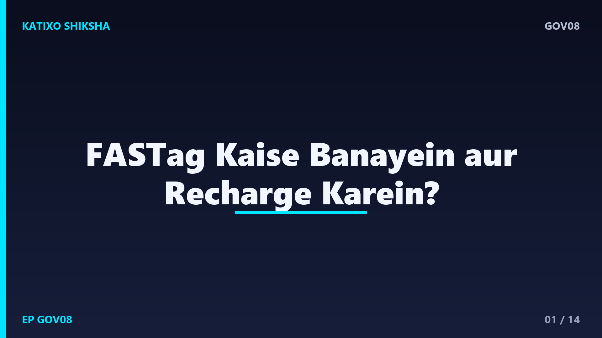
Slide 1दोस्तों, हाईवे पर toll plaza की लंबी लाइनें याद हैं, जहाँ cash के लिए गाड़ियाँ रुकी रहती थीं? अब वो ज़माना गया, क्योंकि FASTag के बिना अब toll plaza पार करना मुश्किल है, और ना होने पर आपको double toll तक देना पड़ सकता है। बहुत लोग सोचते हैं कि FASTag बनवाना झंझट का काम है। नमस्ते, आपका स्वागत है Katixo KhojLab में। आज हम बहुत आसान Hinglish में step-by-step समझेंगे कि FASTag कैसे बनवाएँ और recharge कैसे करें। चलिए शुरू करते हैं।
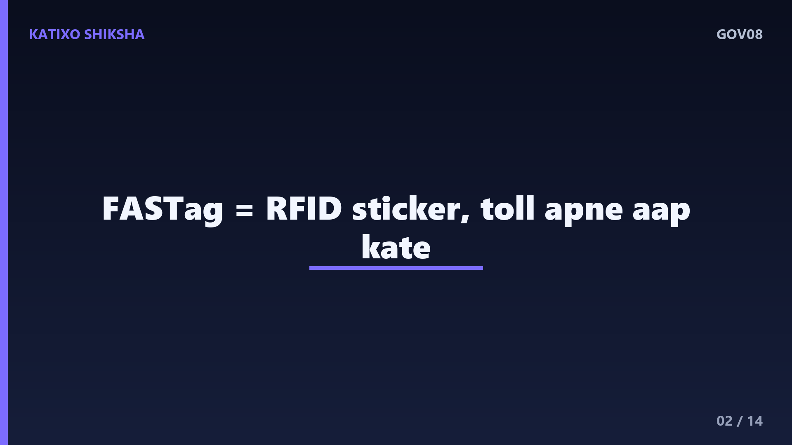
Slide 2सबसे पहले समझिए FASTag है क्या। FASTag एक छोटा sticker होता है जो आपकी गाड़ी की windscreen पर अंदर की तरफ लगाया जाता है, और इसमें एक RFID chip होती है। जब आपकी गाड़ी toll plaza से गुज़रती है, तो वहाँ लगा scanner इस tag को पढ़ लेता है और toll का पैसा अपने आप आपके FASTag account से कट जाता है, बिना रुके। दोस्तों, ये पूरा system National Highways Authority यानी NHAI और सरकार की electronic toll collection पहल का हिस्सा है, इसलिए ये पूरी तरह official है।
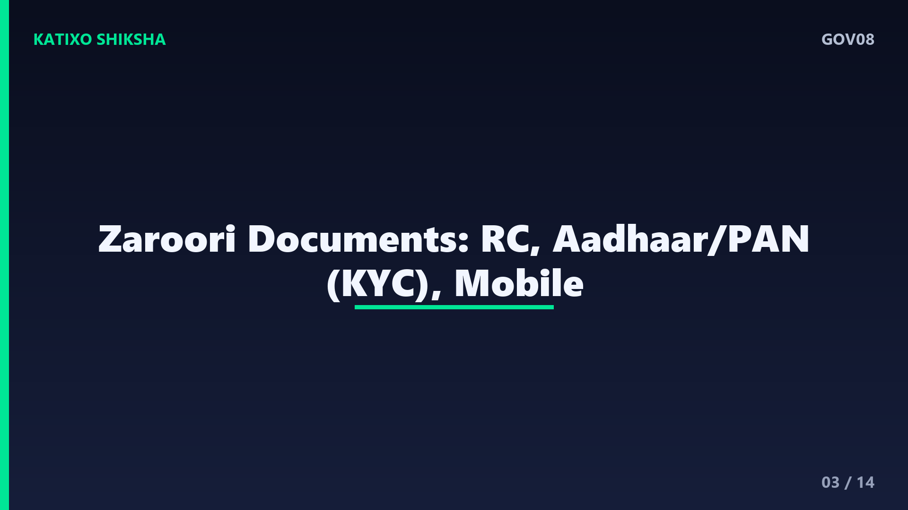
Slide 3अब बनवाने से पहले documents तैयार कर लीजिए। सबसे ज़रूरी है आपकी गाड़ी का RC, यानी Registration Certificate, क्योंकि FASTag गाड़ी के नंबर से जुड़ा होता है। साथ में अपना KYC document रखें, जैसे Aadhaar और PAN, और एक passport size photo भी काम आ सकती है। दोस्तों, गाड़ी के मालिक का mobile number ज़रूर पास रखें, क्योंकि सारे alerts, OTP और balance के messages इसी पर आते हैं। अगर आपकी गाड़ी commercial है, तो उसके हिसाब से थोड़े अलग documents लग सकते हैं।
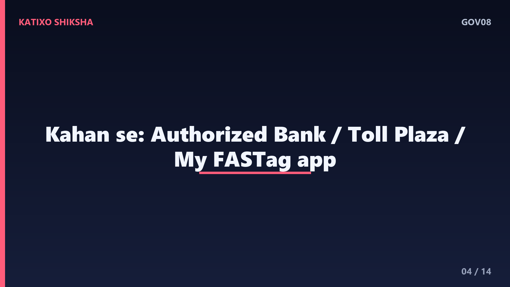
Slide 4अब जानिए FASTag कहाँ से बनवाएँ। दोस्तों, FASTag कई authorized जगहों से मिलता है। पहला, ज़्यादातर बड़े banks इसे जारी करते हैं, आप अपने bank की app, website या branch से apply कर सकते हैं। दूसरा, खुद toll plaza के काउंटर पर भी FASTag मिल जाता है। तीसरा, सरकार का अपना My FASTag mobile app, जिससे आप issuer ढूँढ सकते हैं और apply कर सकते हैं। बहुत ज़रूरी बात, हमेशा authorized bank या official app से ही लें, सस्ते के चक्कर में किसी fake seller के झांसे में ना आएँ।
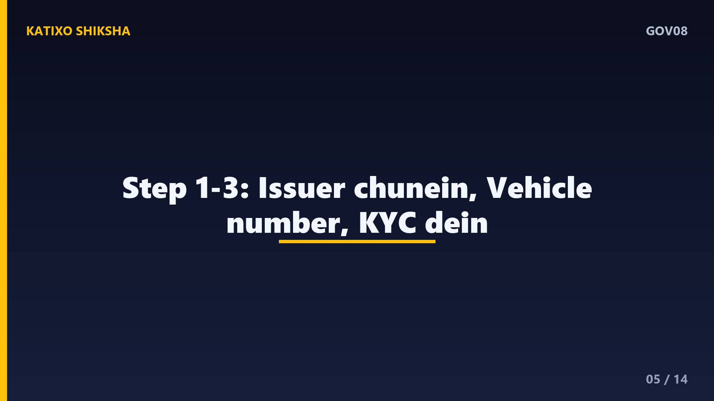
Slide 5अब step-by-step बनवाना शुरू करते हैं। पहला step, अपना issuer चुनें, यानी कोई authorized bank या official app। दूसरा step, अपनी गाड़ी की details भरें, जैसे vehicle registration number और RC की जानकारी। तीसरा step, अपना KYC यानी Aadhaar या PAN की details दें और ज़रूरत हो तो documents upload करें। दोस्तों, ध्यान रखें कि गाड़ी का नंबर बिल्कुल सही भरें, RC के हिसाब से, क्योंकि एक गलत अक्षर भी बाद में toll कटने और verification में दिक्कत खड़ी कर सकता है।
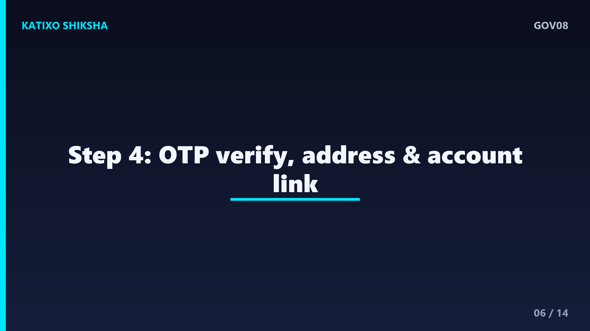
Slide 6चौथा step, mobile verification और address। आपकी दी हुई जानकारी को verify करने के लिए आपके mobile पर एक OTP आता है, जिसे डालकर आप आगे बढ़ते हैं। फिर अगर tag आपके घर डाक से आ रहा है, तो delivery address भी भरना होता है। दोस्तों, कुछ banks में आप वहीं अपनी netbanking या साथ के account से FASTag link भी कर सकते हैं, जिससे recharge और toll deduction आसान हो जाता है। हर field ध्यान से check करें, ताकि कोई गलती बाद में परेशानी ना बने।
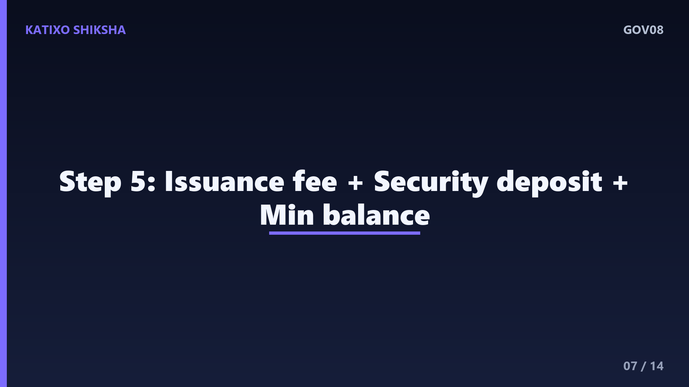
Slide 7पाँचवाँ step, fees और initial amount समझिए। FASTag लेते समय आम तौर पर तीन तरह के charges हो सकते हैं, एक छोटी सी tag issuance fee, एक security deposit, जो refundable होता है, और एक minimum balance जो account में रखना होता है। ये amounts अलग-अलग banks और गाड़ी के type के हिसाब से अलग होते हैं, और समय के साथ बदल भी सकते हैं। दोस्तों, exact charges हमेशा अपने issuing bank या official source से ही confirm करें, किसी agent की बताई रकम पर भरोसा ना करें।
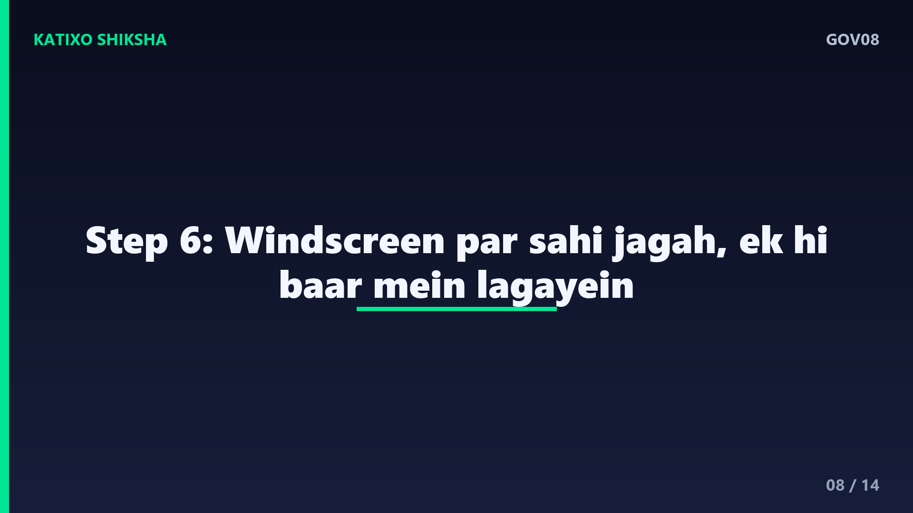
Slide 8छठा step, FASTag को सही जगह लगाना। जब आपका tag मिल जाए, तो उसे गाड़ी की windscreen पर, अंदर की तरफ, बीच में और rear view mirror के पास साफ़ जगह पर चिपकाएँ। दोस्तों, sticker को सही तरह से और एक ही बार में लगाना ज़रूरी है, क्योंकि अगर tag मुड़ जाए, गलत जगह लगे, या scanner उसे ठीक से पढ़ ना पाए, तो toll plaza पर गाड़ी detect नहीं होगी। अगर tag toll counter से लिया है, तो वहीं staff उसे सही तरीके से लगा देता है।
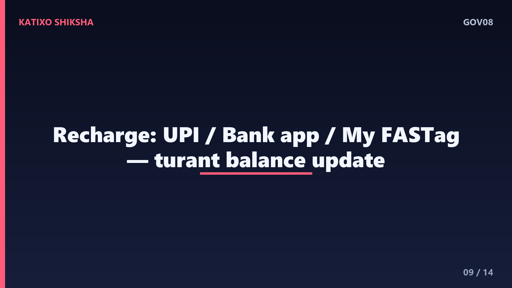
Slide 9अब सबसे काम का हिस्सा, recharge। दोस्तों, FASTag को recharge करने के कई आसान तरीके हैं। अगर tag आपके bank account या prepaid wallet से linked है, तो उस bank की app से जोड़ सकते हैं। ज़्यादातर लोग UPI apps से FASTag recharge करते हैं, जो सबसे तेज़ है, बस अपनी गाड़ी का नंबर या tag चुनें और amount डालें। सरकार के My FASTag app से भी recharge हो जाता है। recharge करते ही balance update हो जाता है और toll अपने आप कटने लगता है।
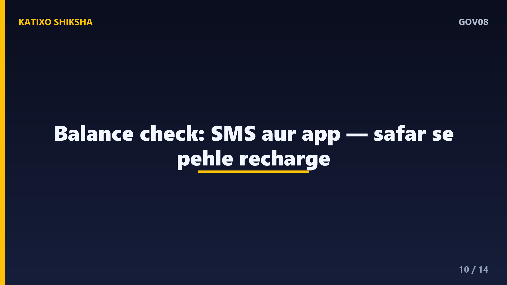
Slide 10अब balance check और alerts की बात। दोस्तों, जब भी toll कटता है, आपके registered mobile पर एक SMS आता है, जिसमें कटा हुआ amount और बचा हुआ balance दिखता है। आप अपने bank की app, FASTag wallet, या My FASTag app में login करके भी balance और transaction history देख सकते हैं। ध्यान रहे, अगर balance कम हुआ या low हुआ, तो toll plaza पर दिक्कत आ सकती है, इसलिए लंबे सफर से पहले हमेशा balance check करके पहले से recharge कर लें।
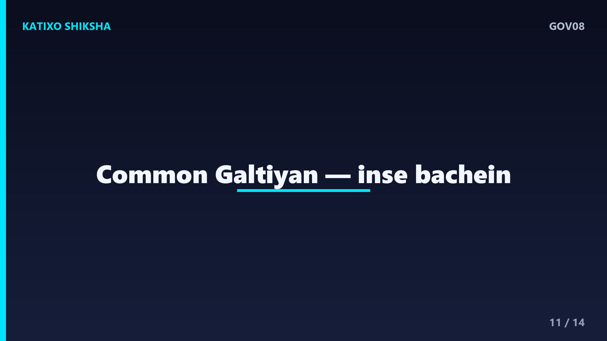
Slide 11अब common गलतियाँ जिनसे बचना है। पहली गलती, FASTag में पैसे ही ना रखना, low balance पर toll lane में दिक्कत होती है। दूसरी, गलत vehicle number डालना, जिससे tag और गाड़ी match नहीं होती। तीसरी, एक ही गाड़ी पर दो FASTag लगाना या किसी और गाड़ी का tag इस्तेमाल करना, जिससे blacklist तक हो सकता है। चौथी, fake seller से सस्ता tag लेना। और पाँचवीं, registered mobile number बंद रखना, जिससे alerts और OTP नहीं मिलते।
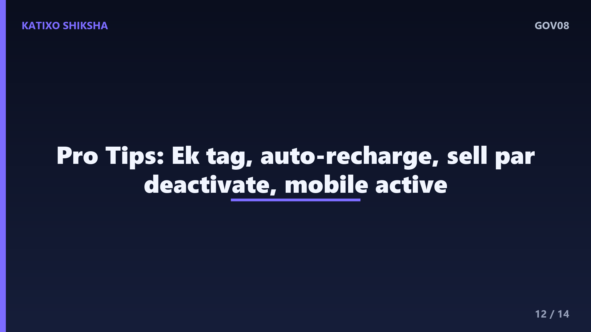
Slide 12कुछ काम की tips भी सुन लीजिए। Tip एक, हमेशा एक गाड़ी पर एक ही valid FASTag रखें। Tip दो, auto-recharge या UPI से recharge set कर लें, ताकि balance कभी खत्म ना हो। Tip तीन, अगर गाड़ी बेच रहे हैं या tag damaged है, तो उसे issuer के पास deactivate या close ज़रूर करवाएँ। और Tip चार, अपना registered mobile number active रखें और हर toll के बाद आने वाले SMS को एक बार ज़रूर देखें, ताकि गलत deduction पकड़ में आ जाए।
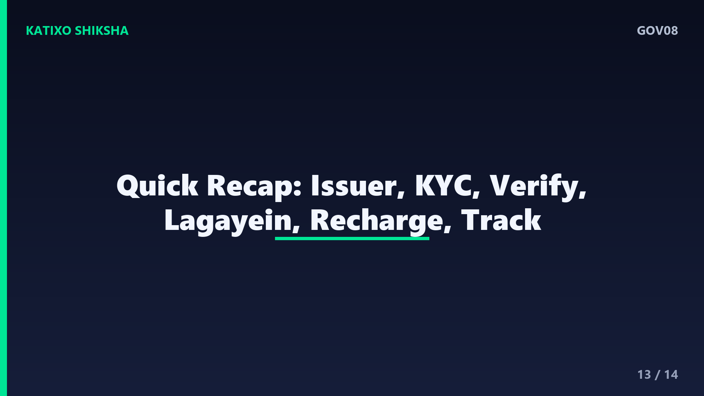
Slide 13अब एक quick recap कर लेते हैं। FASTag एक RFID sticker है जो windscreen पर लगता है और toll अपने आप काट लेता है। बनवाने के लिए authorized bank, toll plaza, या official My FASTag app इस्तेमाल करें। Documents में RC और KYC, यानी Aadhaar या PAN ज़रूरी हैं। Vehicle number सही भरें, OTP से verify करें, charges official source से confirm करें, और tag सही जगह लगाएँ। Recharge UPI या bank app से होता है, और हर toll पर SMS से balance पता चलता रहता है।
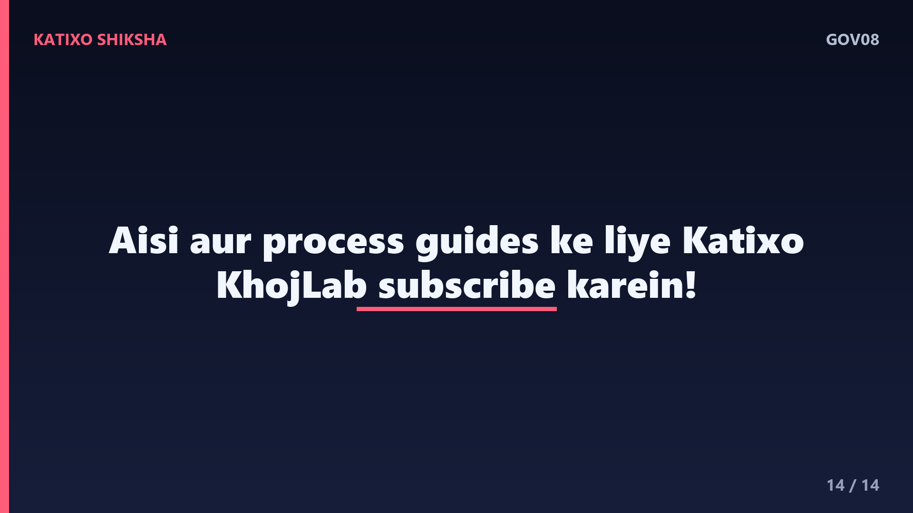
Slide 14तो दोस्तों, अब आप समझ गए कि FASTag बनवाना और recharge करना कितना आसान है। बस authorized issuer से लें, vehicle number सही भरें, balance पहले से रखें, और किसी fake seller या अनजान link से दूर रहें। अगर ये guide काम आई, तो ऐसी और काम की सरकारी process guides के लिए Katixo KhojLab subscribe करें और bell icon ज़रूर दबाएँ। एक ज़रूरी disclaimer, process और fees समय के साथ बदल सकती हैं, इसलिए apply करने से पहले official website ज़रूर check करें। मिलते हैं अगली guide में, धन्यवाद।